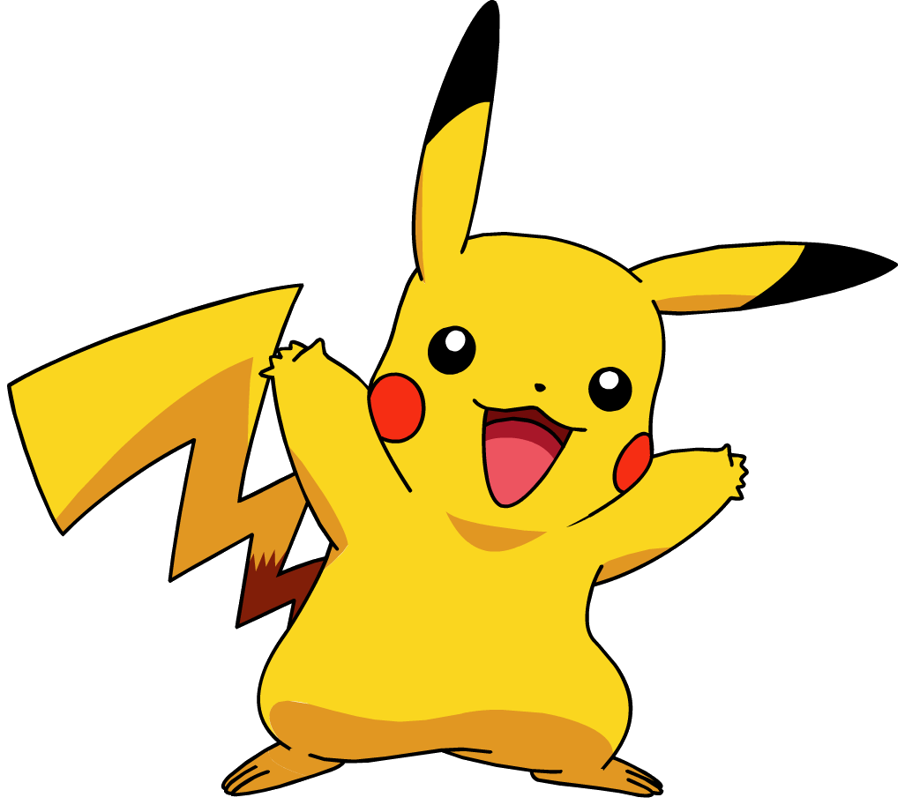
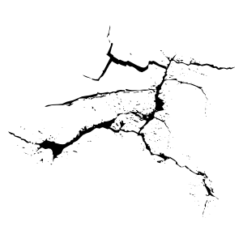
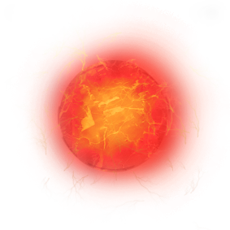

<!DOCTYPE html>
<html lang="en">
    <head>
        <!-- Encodage pour les accents -->
        <meta charset="UTF-8">
        
        <!-- Titre de la Page -->
        <title>Javascript | Multiples Formulaires</title>

        <!-- Pour Internet Explorer : S'assurer qu'il utilise la dernière version du moteur de rendu -->
        <meta http-equiv="X-UA-Compatible" content="ie=edge">

        <!-- Affichage sans zoom pour les mobiles -->
        <meta name="viewport" content="width=device-width, init-scale=1">

        <!-- Bootstrap CSS -->
        <link rel="stylesheet" href="https://maxcdn.bootstrapcdn.com/bootstrap/3.3.7/css/bootstrap.min.css" integrity="sha384-BVYiiSIFeK1dGmJRAkycuHAHRg32OmUcww7on3RYdg4Va+PmSTsz/K68vbdEjh4u" crossorigin="anonymous">

        <!-- Styles CSS -->
        <link rel="stylesheet" href="./assets/css/style.css">

        <!--  Font Awesome | Icons -->
        <link href="https://maxcdn.bootstrapcdn.com/font-awesome/4.7.0/css/font-awesome.min.css" rel="stylesheet" integrity="sha384-wvfXpqpZZVQGK6TAh5PVlGOfQNHSoD2xbE+QkPxCAFlNEevoEH3Sl0sibVcOQVnN" crossorigin="anonymous">

        <!-- HTML5 Shiv & Respond JS -->
        <!--[if lt IE 9]>
            <script src="https://cdnjs.cloudflare.com/ajax/libs/html5shiv/3.7.3/html5shiv.min.js" integrity="sha256-3Jy/GbSLrg0o9y5Z5n1uw0qxZECH7C6OQpVBgNFYa0g=" crossorigin="anonymous"></script>
            <script src="https://cdnjs.cloudflare.com/ajax/libs/respond.js/1.4.2/respond.min.js" integrity="sha256-g6iAfvZp+nDQ2TdTR/VVKJf3bGro4ub5fvWSWVRi2NE=" crossorigin="anonymous"></script>
        <![endif]-->

        <style>
            .row {
                height: 80px
            }

            .col {
                height: 80px;
            }

            .col-xs-1 {
                height: 80px;
            }

            .border {
                border: solid 1px black
            }

            .mur {
                background-color: grey;
            }
            
            .container {
                overflow: hidden;
            }

            /*.selected {
                background-color: red;
            }*/

        </style>
    </head>


    <body>
        
        <div class="container"></div> <!-- /.container -->


         <!-- jQuery CDN -->
        <script src="https://cdnjs.cloudflare.com/ajax/libs/jquery/3.2.1/jquery.min.js" integrity="sha256-hwg4gsxgFZhOsEEamdOYGBf13FyQuiTwlAQgxVSNgt4=" crossorigin="anonymous"></script>

        <!-- Bootstrap JS -->
        <script src="https://maxcdn.bootstrapcdn.com/bootstrap/3.3.7/js/bootstrap.min.js" integrity="sha384-Tc5IQib027qvyjSMfHjOMaLkfuWVxZxUPnCJA7l2mCWNIpG9mGCD8wGNIcPD7Txa" crossorigin="anonymous"></script>        


        <script>
            // Initialisation de la fonction d'affichage de la grille
            function grille(h) {
                posePika = false;
                for(let i=0; i<h; i++) {
                    for(let j=0; j<12; j++) {
                        var mur = Math.random()
                        if(mur > 0.7) {
                            $('.container').append('<span class="col-xs-1 border align-self-center mur"></span>')
                        } else if(j>5 && i>4 && !posePika) {
                            $('.container').append('<span class="col-xs-1 border align-self-center pika"></span>')
                            posePika = true;
                        } else {
                            $('.container').append('<span class="col-xs-1 border align-self-center"></span>')
                        }
                    }
                }
            }
            
        </script>

        <script>

            // Initialisation des variables globales
            var bdf = [];
            var nombreBDF = 0;
                    /* ------------------------------------------------
                                    FONCTIONS D'AIDE
                    ------------------------------------------------ */

            // Initialisation de la fonction de ciblage de case
            function caseSelec() {
                $('span').hover(function() {
                    $('.selected').removeClass('selected')
                    $(this).addClass('selected')
                })
            }

            // Initialisation de la fonction briseMur
            function briseMur(mur) {
                if($(mur).hasClass('fissure')) {
                    $(mur).removeClass('mur fissure')
                     $(mur).empty()
                }

                if($(mur).hasClass('mur')) {
                    $(mur).addClass('fissure')
                    $(mur).append('')
                }
            }

            // Initialisation de a fonction "saut de ligne"
            function sautDeLigne(caseInitiale, hautOuBas) {
                if(hautOuBas) {
                    for(let i=0; i<12; i++){
                        caseInitiale = caseInitiale.next()
                    }
                }
                
                if(!hautOuBas) {
                    for(let i=0; i<12; i++) {
                        caseInitiale = caseInitiale.prev()
                    } 
                }    
                    return caseInitiale;
                
            }

            // On initialise la fonction de déplacement de la Boule De Feu
                function sortBDF(caseSort, direction) {
                    // On vérifie que la case est disponible
                    if(!caseSort.hasClass('mur')) {
                            nombreBDF ++
                            caseSort.append('')
                            bdf[nombreBDF] = $('.bdf').last()
                            
                            // On vérifie la position du mur le plus proche
                            distance = bdf[nombreBDF].offset().left
                            for(let j=0; j<murs.length; j++) {
                                if (murs[j].offsetTop <= bdf[nombreBDF].offset().top && (murs[j].offsetTop + murs[j].offsetHeight) >= bdf[nombreBDF].offset().top &&  -direction * (bdf[nombreBDF].offset().left - murs[j].offsetLeft) < distance && -direction *(bdf[nombreBDF].offset().left - murs[j].offsetLeft) > 0) {
                                    distance = -direction * (bdf[nombreBDF].offset().left - murs[j].offsetLeft)
                                       var numerosMur = j
                                    trouveMur = true;
                                }
                            }

                                // On lui ajoute une animation
                                bdf[nombreBDF].animate({
                                    left: direction * distance
                                }, 'slow', function() {
                                    bdf[nombreBDF].remove()
                                    if (trouveMur) {
                                        briseMur(murs[numerosMur])
                                    }
                                })
                            } else {
                                briseMur(caseSort); 
                            }
                }
                            
        </script>


        <script>
        $(function() {
            // On crée une grille de Hauteur = 8
            grille(8)

            // On écoute la séléction de la case
            caseSelec()

            // On écoute la fonction briseMur
            briseMur()

            // Je crée une fonction qui empeche pikachu de marcher sur un mur
            function nonMur(caseNew) {
                if(caseNew.hasClass('mur')) {
                    return false
                } else {return true}
            }


                /* ------------------------------------------------
                                MOUVEMENTS PIKACHU
                ------------------------------------------------ */
                

                 ////////////////////////////////////////
                // -- On place pikachu (au clique) -- //
               ////////////////////////////////////////
               
            /* $('span').click(function() {
                // On efface le pikachu de l'ancienne case
                $('.pika').empty()

                // On vire/ajoute la classe pikachu
                $('.pika').removeClass('pika')
                $(this).addClass('pika')

                // On vide ce qui se trouve sur la case sélectionnée et on y affiche pikachu
                $(this).empty()
                $(this).append('')

                // Affichage de la case dans le console.log
                console.log($(this))
            }) */


                 /////////////////////////////////////////
                // -- On place pikachu (au clavier) -- //
               /////////////////////////////////////////

            $('body').keydown(function(e) {
                if(e.key == "q"){
                    // On sélectionne l'ancienne case de pikachu
                    var casePika = $('.pika')
                    var caseNew = casePika.prev()

                    // On test que Pikachu ne soit pas au bord de l'écran
                    if(casePika.prev().offset().top == casePika.offset().top && nonMur(caseNew)) {

                        // On affiche pikachu sur la nouvelle case
                        casePika.prev().append('')

                        // On lui donne la classe "pika"
                        casePika.prev().addClass('pika')

                        // On nettoie l'ancienne case
                        casePika.removeClass('pika')
                        casePika.empty()
                    }  
                }

                if(e.key == "d"){
                    // On sélectionne l'ancienne case de pikachu
                    var casePika = $('.pika')
                    var caseNew = casePika.next()

                    // On test que Pikachu ne soit pas au bord de l'écran
                    if(casePika.next().offset().top == casePika.offset().top && nonMur(caseNew)) {
                        
                        // On affiche pikachu sur la nouvelle case
                        casePika.next().append('')

                        // On lui donne la classe "pika"
                        casePika.next().addClass('pika')

                        // On nettoie l'ancienne case
                        casePika.removeClass('pika')
                        casePika.empty()
                    }  
                }

                if(e.key == "s"){
                    // On sélectionne l'ancienne case de pikachu
                    var casePika = $('.pika')
                    
                    // On initialise la case suivante
                    var caseNew = casePika;
                    for(let i=0; i<12; i++) {
                        caseNew = caseNew.next();
                    }

                    // On test que Pikachu ne soit pas au bord de l'écran
                    if(caseNew.offset().left == casePika.offset().left && nonMur(caseNew)) {
                        
                        // On affiche pikachu sur la nouvelle case
                        caseNew.append('')

                        // On lui donne la classe "pika"
                        caseNew.addClass('pika')

                        // On nettoie l'ancienne case
                        casePika.removeClass('pika')
                        casePika.empty()
                    }  
                }

                if(e.key == "z"){
                    // On sélectionne l'ancienne case de pikachu
                    var casePika = $('.pika')
                    
                    // On initialise la case suivante
                    var caseNew = casePika;
                    for(let i=0; i<12; i++) {
                        caseNew = caseNew.prev();
                    }

                    // On test que Pikachu ne soit pas au bord de l'écran
                    if(caseNew.offset().left == casePika.offset().left && nonMur(caseNew)) {
                        
                        // On affiche pikachu sur la nouvelle case
                        caseNew.append('')

                        // On lui donne la classe "pika"
                        caseNew.addClass('pika')

                        // On nettoie l'ancienne case
                        casePika.removeClass('pika')
                        casePika.empty()
                    }  
                }

            })


                /* ------------------------------------------------
                                   SORTS PIKACHU
                ------------------------------------------------ */


            $('body').keyup(function(e) {

                             /////////////////////////////
                            // -- Sort Boule De Feu -- //
                           /////////////////////////////

                if(e.key == "a"){
                    // On utilise la fontion "caseSelect"
                    caseSelec()
                           
                    // On séléctionne l'image, la position de la souris, la taille de l'écran... etc
                    pika = $('.pika')
                    mouseX = $('.selected').offset().left
                    mouseY = $('.selected').offset().top
                    largeur = $('span').width() * 12
                    hauteur = $('span').height() * 8
                    murs = $('.mur')
                    var trouveMur = false


                    // On commence par choisir la direction
                    if(Math.abs(mouseX - pika.offset().left) > Math.abs(mouseY - pika.offset().top)) {
                       
                        if(mouseX - pika.offset().left < 0) {
                            // On crée la boule de feu
                            var caseSort = pika.prev()

                            // On gère le déplacement de la boule de feu avec la fonction "sortBDF()"
                            sortBDF(caseSort, -1)
                            
                        } else {
                            // On crée la boule de feu
                            var caseSort = pika.next()
                            
                            sortBDF(caseSort, 1)
                        }
                    } else {
                        if(mouseY - pika.offset().top > 0) {
                            // On crée la boule de feu
                            var caseSort = sautDeLigne(pika, true)
                            caseSort.append('')
                            bdf = $('.bdf')

                            // On lui ajoute une animation
                            bdf.animate({
                                top: hauteur
                            }, 'slow', function() {
                                bdf.remove()
                            })
                        } else {
                            // On crée la boule de feu
                            var caseSort = sautDeLigne(pika, false)
                            caseSort.append('')
                            bdf = $('.bdf')

                            // On lui ajoute une animation
                            bdf.animate({
                                top: - bdf.offset().top
                            }, 'slow', function() {
                                bdf.remove()
                            })
                        }
                    }

                } // Fin du sort BOULE DE FEU


                             ////////////////////////
                            // -- Sort Eclaire -- //
                           ////////////////////////
                
                if(e.key == "e") {

                }
                

            })

        
        })

        </script>
    </body>
</html>